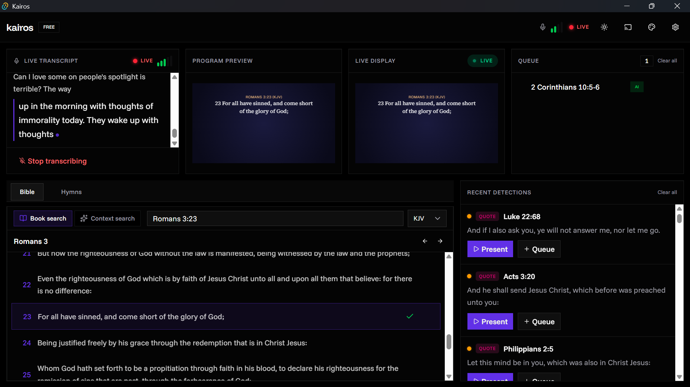

Trusted in the Pulpit

Kairos listens to your preaching, detects Bible verses in real-time, and displays them instantly. No manual typing — just preach.

Trusted in the Pulpit
Kairos eliminates the friction of manual slide control, allowing your media team to focus on quality while AI handles the precision.
Pure audio capture directly from your sound system with AI-driven noise isolation.
Advanced language models that understand context and find verses even through paraphrasing.
Project lyrics instantly with access to a vast, structured hymnary directly within Kairos.
Accuracy rate
Live Latency
Bible Versions
Cost per month
"Kairos listens and brings up scriptures automatically — it's truly remarkable. It prevents technical hurdles from breaking the flow of worship."
"The moment I reference a verse, it's on the screen instantly. It has completely restored the flow of my message without manual interruptions. A divine tool indeed."
"Detecting scripture in under two seconds is a total game changer. The NDI transparency support is perfect for our live stream overlays."
Join thousands of ministries simplified by Kairos.
Free, open-source, and divine.